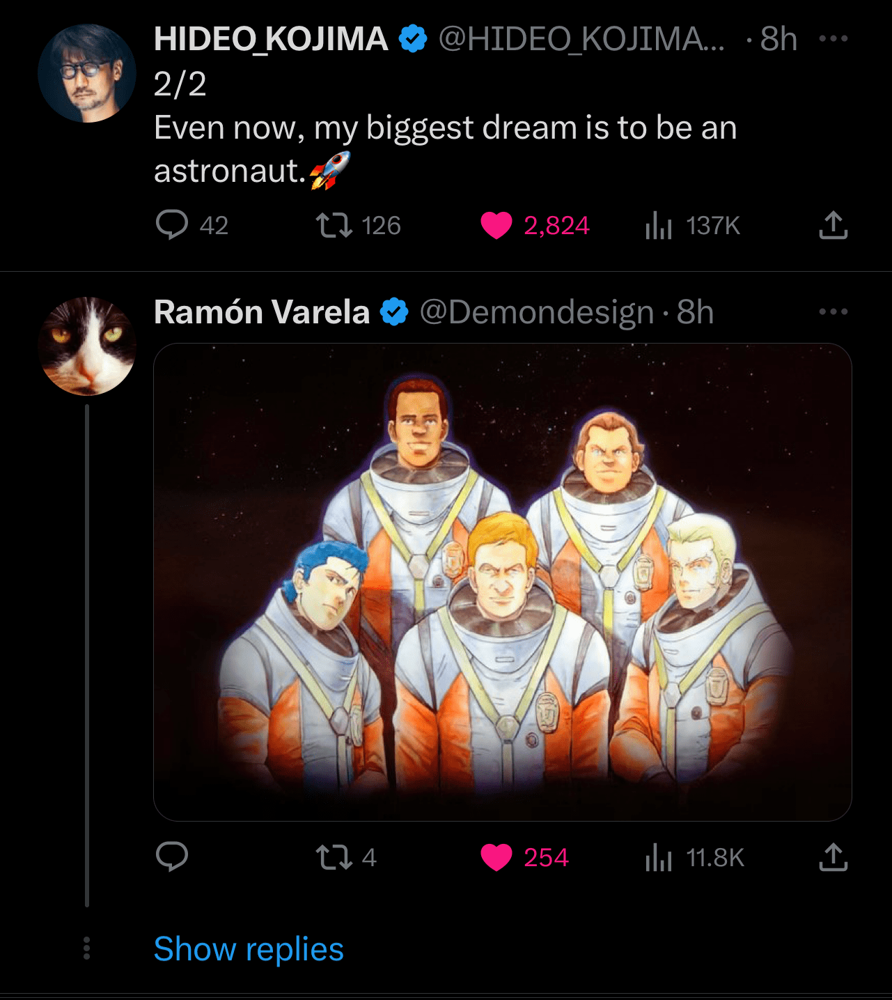

“ I have already spoken at length about the new varieties of man
that have emerged… There is,
however, another very special type of human… Homo Ludens - they who
play.
Be it deliberate or unintentional, Homo Ludens unite people — creating culture, shaping the
very world around them—not
through violence, nor laws or proscriptions, but rather through metaphorical acts of play.”
- Heartman, Death Stranding
The essence of Homo Ludens echoes the transformative power of art, film, and games. Just as play unites people and creates culture, so too do these art forms forge connections and spark emotions. They serve as platforms for exploration and experimentation, inviting us to unleash our imaginations, transform our perspectives, and experience life in all its complexity.
In the realm of human expression, art serves as a catalyst for change, transcending boundaries and touching the deepest corners of our souls. The transformative power of art lies in its ability to challenge conventions, evoke emotions, and inspire personal growth.
Playfulness, akin to art in its diverse expressions, encourages us to confront our fears and embrace
our imperfections. Huizinga uses the example
of wigs to illustrate the the transformative
power of play and its impact on culture. Once a symbol of status and power reserved for nobles,
judges, and
influential individuals, wigs have transcended their original purpose and are now used on stage, in
performances, and for entertainment, showcasing the evolution of our culture.
Huizinga also highlights the lack of playfulness in societies
such as the USSR and World War II
Germany. The absence of play in these regimes indicates a suppression of creativity,
self-expression, and individuality. The rigidity and control exerted by these political systems
stifled the potential for transformative growth and human connection that playfulness fosters.
It's true that even in societies where play was suppressed,
there were still great artists and
designers who emerged. This is a testament to the resilience of the human spirit and the power of
creativity to thrive even in oppressive conditions. However, it's important to recognize that these
individuals, like Tarkovsky, often faced significant obstacles and risks in pursuing their work.
It's also
worth considering how much more they could have achieved in more playful and supportive
environments.
In light of Huizinga's observations, we can appreciate the importance of nurturing playfulness and creativity within our societies. By fostering an environment that encourages self-expression, we enable individuals to tap into the transformative power of art, which opens our minds, challenges our beliefs, and inspires us to evolve. And this is what I have experienced in Hideo Kojima's Death Stranding.
Believing in the power of games has significantly influenced my artistic perspective, as I see them as a potent medium for storytelling, self-expression, and forging human connections. Hideo Kojima's work, in particular, has been a source of inspiration and enlightenment in this regard. His anti-war philosophy, embedded within the narratives and gameplay of his creations, has shed light on the complexities of human conflict and the importance of promoting peace and understanding.

As we navigate the twists and turns of our own stories, it is essential to remain positive and resilient, embracing the lessons and growth that come from every experience — whether heartwarming, tragic, or enlightening. Life is a movie, Life is a game, Life is a painting, a novel, life can be anything but at the end, it is your story, my story, and stories interwined. As you journey through the various arcs of your existence, encountering different levels of difficulty and unexpected challenges, embrace the spirit of playfulness and navigate life as if it were a great game, appreciating the beauty of each moment and remaining open to the endless possibilities that lie ahead.